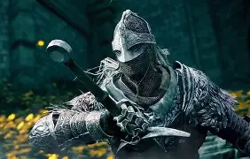
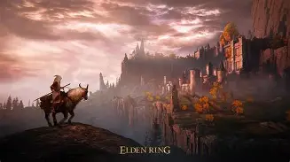
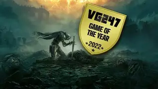

As Terras Intermédias são o cenário onde o jogo se passa. Trata-se de um continente vasto, belo e perigoso, que outrora foi um reino próspero e abençoado pela Távola Redonda e, principalmente, pela Árvore Erigida , uma árvore colossal e brilhante que domina o horizonte.
Era de Ouro: O mundo era governado pela Marika, a Eterna, sob a ordem do Elden Ring (o Anel Pristino), uma força metafísica que definia as leis da própria realidade (como a vida e a morte).
A Ruptura: Tudo mudou quando o Elden Ring foi despedaçado. Os filhos semideuses de Marika reivindicaram os fragmentos do anel (chamados de Grandes Runas). Isso desencadeou uma guerra devastadora que ninguém venceu, deixando o mundo em um estado de decadência estagnada, habitado por monstros, soldados enlouquecidos e divindades corrompidas.
Maculados são os rejeitados desse mundo. Há muito tempo, os ancestrais dos Maculados perderam a "Graça" (a luz dourada da Erdtree) e foram banidos das Terras Intermédias, condenados a viver e morrer em terras distantes. No entanto, após a Ruptura e o fracasso dos semideuses em consertar o mundo, a própria Graça despertou novamente. O Chamado do Destino: Os Maculados foram ressuscitados e guiados de volta às Terras Intermédias. O Objetivo: A Graça aponta o caminho para que os Maculados façam o que os semideuses não conseguiram: derrotar os portadores das Grandes Runas, reunir os fragmentos e consertar o anel.
Buscar o Elden Ring não significa apenas encontrar um objeto físico, mas sim decidir o futuro da própria existência. Ao coletar as Grandes Runas e alcançar o Trono Elden, o Maculado tem a chance de se tornar o Elden Lord (o Lorde Prístino). Ao fazer isso, você escolhe como o anel será consertado, o que dita qual nova era governará as Terras Intermédias — seja restaurando a antiga ordem dourada, trazendo uma era de trevas, ou seguindo caminhos ainda mais enigmáticos.

Nos jogos anteriores da FromSoftware, o progresso era majoritariamente linear ou focado em "funis" (você tinha duas ou três rotas, mas eventualmente precisava derrotar um chefe específico para avançar). Em Elden Ring, as Terras Intermédias funcionam sob a premissa da liberdade absoluta Sem Paredes Invisíveis: Logo após o tutorial, você é jogado em Limgrave e pode ir para quase qualquer direção. Se um chefe parecer difícil demais, você não fica travado; basta dar meia-volta, explorar outra região, subir de nível e voltar mais forte. Exploração Orgânica: O jogo não enche o seu mapa de pontos de interrogação ou listas de tarefas como os mundos abertos tradicionais. Você descobre cavernas, ruínas e torres olhando para o horizonte ou seguindo os relevos do próprio mapa desenhado à mão.
A transição para o mundo aberto exigiu que o estúdio repensasse várias de suas mecânicas principais:

Diferente da maioria dos jogos de mundo aberto modernos, que enchem o mapa de ícones, missões repetitivas e caminhos guiados por GPS, Elden Ring resgatou o puro sentimento de descoberta. O jogo confia na curiosidade do jogador: se você vê uma estrutura misteriosa ou uma montanha ao longe, você pode ir até lá e, quase sempre, encontrará um segredo, uma masmorra ou um chefe único.
A FromSoftware é famosa por seus jogos extremamente difíceis (como Dark Souls e Bloodborne). Elden Ring manteve o combate tenso e os chefes épicos, mas introduziu mecânicas que tornaram o jogo muito mais amigável para novos jogadores: Invocações de Espíritos (Spirit Ashes): Ajudam a distrair os chefes. A Liberdade de Escolha: Se um chefe estiver muito difícil, você pode simplesmente ir explorar outra região, subir de nível, conseguir equipamentos melhores e voltar quando estiver pronto.
O mundo das Terras Intermédias é visualmente impressionante. A combinação do design sombrio e detalhado da FromSoftware com a mitologia rica criada em colaboração com o escritor George R.R. Martin (autor de As Crônicas de Gelo e Fogo / Game of Thrones) gerou um universo fascinante, onde cada castelo, ruína e criatura conta uma história.
O jogo conseguiu o equilíbrio perfeito: oferece a imensidão do mundo aberto, mas, quando você entra em áreas como o Castelo de Stormveil ou a Academia de Raya Lucaria, o jogo volta a ter o design de fases clássico e impecável dos jogos anteriores — cheio de labirintos, atalhos verticais e segredos escondidos.
O lançamento do jogo parou a internet. A comunidade se uniu de uma forma raramente vista, compartilhando mapas criados à mão, dicas, memes (como o lendário jogador Let Me Solo Her) e teorias sobre a história. Foi um sucesso estrondoso de crítica e de público, vendendo milhões de cópias e furando a bolha dos jogos considerados "de nicho".
